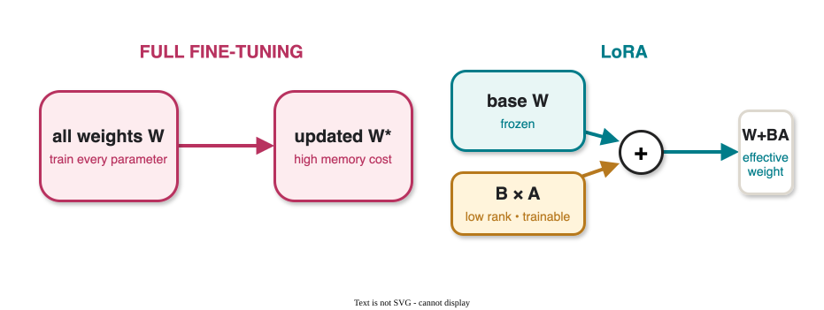
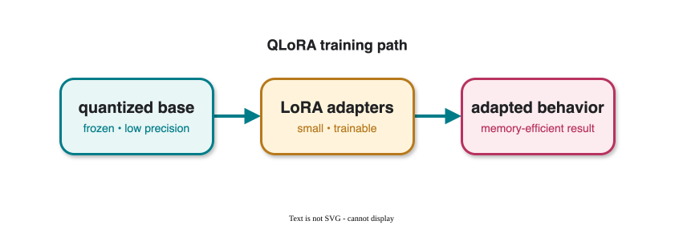
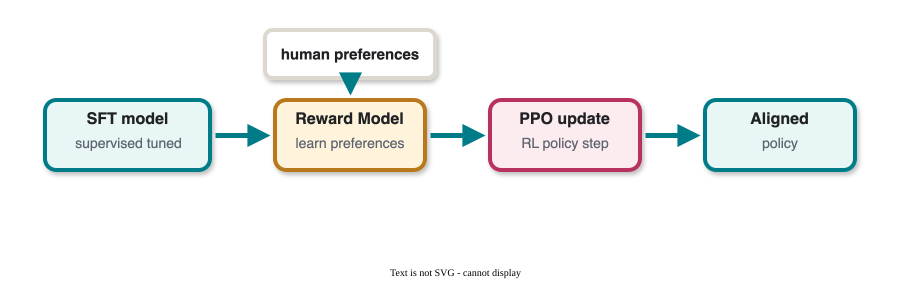
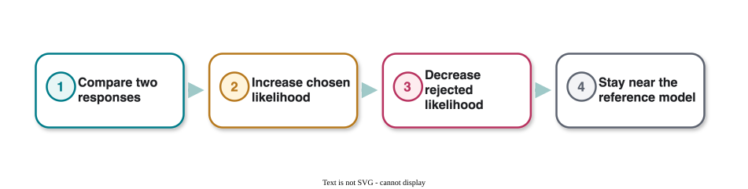
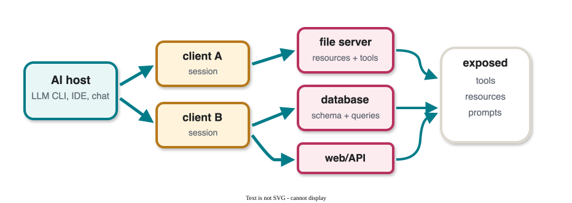
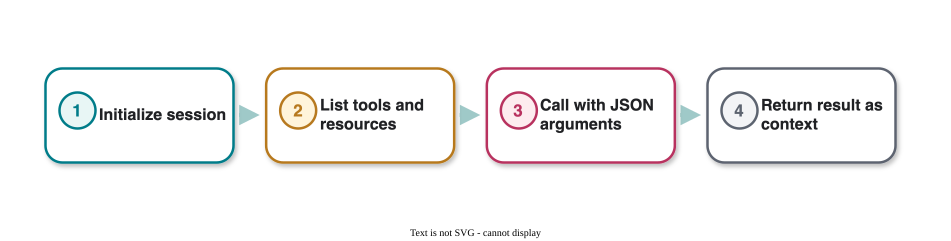
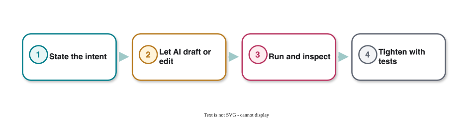
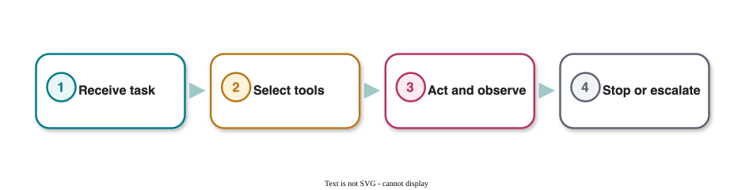
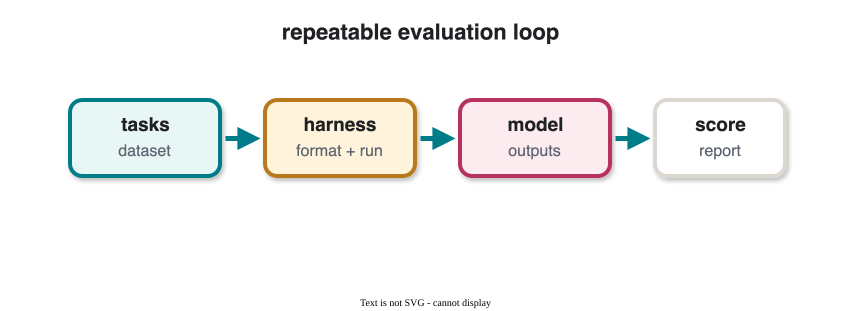

CS 463G & CS 663
(Intro to) AI
Lecture 39: Cutting-Edge AI Topics
Fall 2026
How modern AI systems are adapted, aligned, packaged into agents, and evaluated.
We have studied search, logic, probability, ML, deep learning, RL, generative models, and transformers.
Today is about the layer above the base model:
The frontier is less about one magic model and more about the system around the model.
| Term | Full name / meaning |
|---|---|
| LoRA | Low-Rank Adaptation |
| QLoRA | Quantized LoRA |
| PEFT | Parameter-Efficient Fine-Tuning |
| RLHF | Reinforcement Learning from Human Feedback |
| DPO | Direct Preference Optimization |
| PPO | Proximal Policy Optimization |
| SFT | Supervised Fine-Tuning |
| RM | Reward Model |
| MCP | Model Context Protocol |
| Vibe coding | AI-assisted exploratory programming by steering with intent and checking results |
Most frontier acronyms describe either how we adapt a model, align a model, or evaluate a model.
Full fine-tuning updates all model weights.
Low-Rank Adaptation (LoRA) freezes the base model and trains small low-rank adapter matrices.

For a linear layer with weight matrix W:
h = Wx
Low-Rank Adaptation (LoRA) replaces this with:
h = Wx + \Delta W x,\qquad \Delta W = BA
where A \in \mathbb{R}^{r \times d}, B \in \mathbb{R}^{k \times r}, and r is small.
The update is low-rank, so the trainable parameter count is much smaller than full fine-tuning.
LoRA is part of a broader family called parameter-efficient fine-tuning (PEFT).
Typical use cases:
Question: when is a small adapter enough, and when do you need to update more of the model?
Quantized LoRA (QLoRA) combines quantization with LoRA-style adaptation.
Conceptually:

Instruction tuning teaches a model to follow examples.
Preference optimization teaches it to prefer one response over another.
Data looks like:
| Prompt | Chosen response | Rejected response |
|---|---|---|
| x | y_w | y_l |
Preference data is often easier to collect than a perfect scalar reward.
Reinforcement Learning from Human Feedback (RLHF) is a common alignment pipeline.

RLHF can work well, but it has moving parts:
Direct Preference Optimization (DPO) is an alternative that turns preference optimization into a supervised-style loss.
It compares the model’s log-probability ratio for chosen and rejected responses.
\mathcal{L}_{\text{DPO}} = -\log \sigma\left( \beta \log \frac{\pi_\theta(y_w \mid x)}{\pi_{\text{ref}}(y_w \mid x)} - \beta \log \frac{\pi_\theta(y_l \mid x)}{\pi_{\text{ref}}(y_l \mid x)} \right)
DPO keeps the reference model close while increasing preference for chosen responses.

DPO is simpler than PPO-style RLHF, but it still depends strongly on the quality and diversity of preference data.
A tool is usually a callable function.
A skill is a reusable procedure or package that tells an agent how to do a type of task.
| Concept | Typical unit | Example |
|---|---|---|
| Tool | Function call | Search web, run tests, query database |
| Skill | Workflow package | “Create a lecture deck”, “analyze a spreadsheet” |
| Agent | Loop + model + tools + state | Plan, act, observe, revise |
Skills move repeated procedural knowledge out of the prompt.
Without skills
With skills
Model Context Protocol (MCP) is a standard way for an AI host to connect to external tools, data, and workflows.
It matters for agents because it separates the agent loop from the integration code.
| MCP piece | Role in an agent system |
|---|---|
| Host | AI application or LLM CLI that coordinates model calls |
| Client | Connector managed by the host, usually one per server |
| Server | External capability provider: files, databases, APIs, apps |
| Tools | Callable actions with structured input schemas |
| Resources | Readable context such as files, schemas, records, or docs |
| Prompts | Reusable templates or workflows exposed by a server |

MCP changes the engineering problem from “hard-code every tool” to “discover, permission, call, and log external capabilities.”
MCP uses structured protocol messages, so tool use can be discovered and audited.

MCP makes agents more capable, so the harness must make tool use more controlled.
| Risk | Control |
|---|---|
| Too many tools confuse tool selection | expose a small task-specific tool set |
| Prompt injection in retrieved data | separate data from instructions; review sensitive calls |
| Over-broad permissions | least privilege, read-only defaults, explicit approval |
| Tool result looks authoritative but is stale/wrong | provenance, timestamps, validation |
| Hidden side effects | dry-run mode, logs, reversible actions when possible |
The key question is not “Can the model call a tool?” but “What should the system allow the model to call, when, and with what audit trail?”
Vibe coding is an informal name for a programming workflow where the human describes intent and the AI rapidly writes, edits, or explains code.
It feels different from traditional programming because the user can work at a higher level:
| Human role | AI role |
|---|---|
| Describe the goal | Draft code |
| Inspect behavior | Explain or revise |
| Set constraints | Run tools or suggest tests |
| Decide what is acceptable | Iterate toward working software |
Vibe coding is powerful for exploration, but the human still owns correctness.

Good vibe coding is not “stop thinking”; it is faster iteration with stronger verification habits.
The original meaning of harness is equipment that holds, connects, and controls something so it can do useful work safely.
In AI, the word appears in two related ways:
The shared idea is control: the harness holds the model, tools, tasks, rules, and logs together.
An agent harness is the runtime wrapper around an agent loop.
It usually manages:
| Harness part | What it controls |
|---|---|
| Model interface | system/developer instructions, model calls |
| Tool registry | available tools, schemas, permissions |
| State | memory, files, workspace, task context |
| Agent loop | plan, act, observe, revise |
| Limits | budgets, stop rules, escalation |
| Logs | traces, errors, human review |
The harness is not the agent’s intelligence; it is the controlled environment that lets the agent act.

Agent harnesses make tool use more reproducible, observable, and safer.
Evaluation harnesses are for measuring behavior; agent harnesses are for running behavior.
An evaluation harness usually specifies:
If the harness changes, the benchmark number may change too.

Frontier systems fail in different ways than textbook classifiers.
| Area | Failure mode |
|---|---|
| LoRA | Overfitting small adapters; forgetting general behavior |
| DPO | Preference data bias; rejected response not truly bad |
| Skills | Hidden assumptions; unsafe tool use |
| MCP | Over-broad connectors; prompt injection through external context |
| Vibe coding | Plausible code, hidden bugs, weak tests |
| Evaluation harnesses | Benchmark leakage; brittle scoring |
| Agent harnesses | Over-broad permissions; missing stop rules; poor logs |
| Agents | Loops, tool errors, long-horizon drift |
When reading about a new method, ask:
The frontier changes fast, but these questions age well.